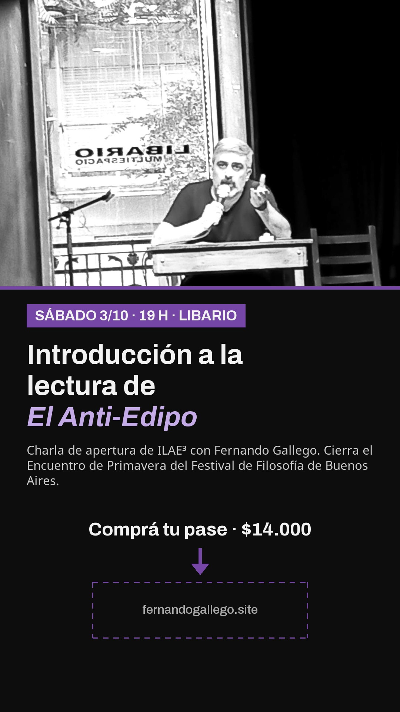
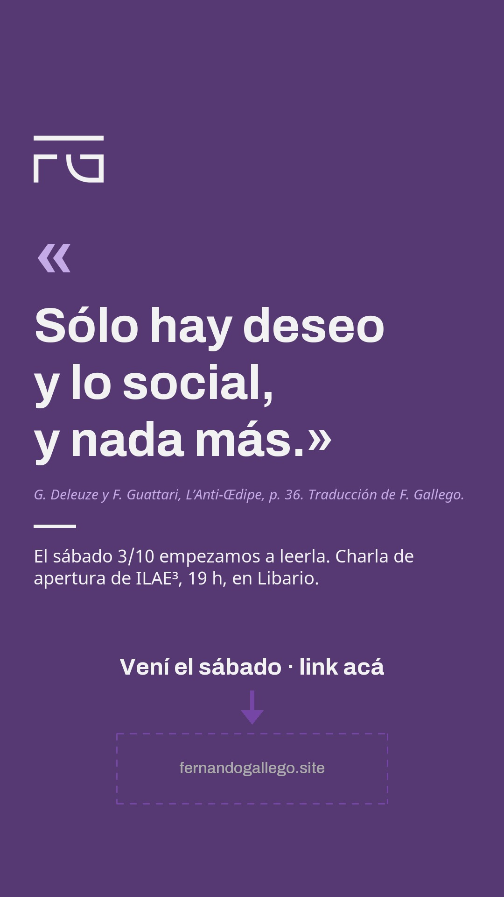
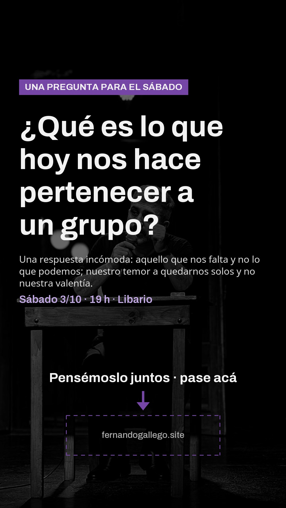
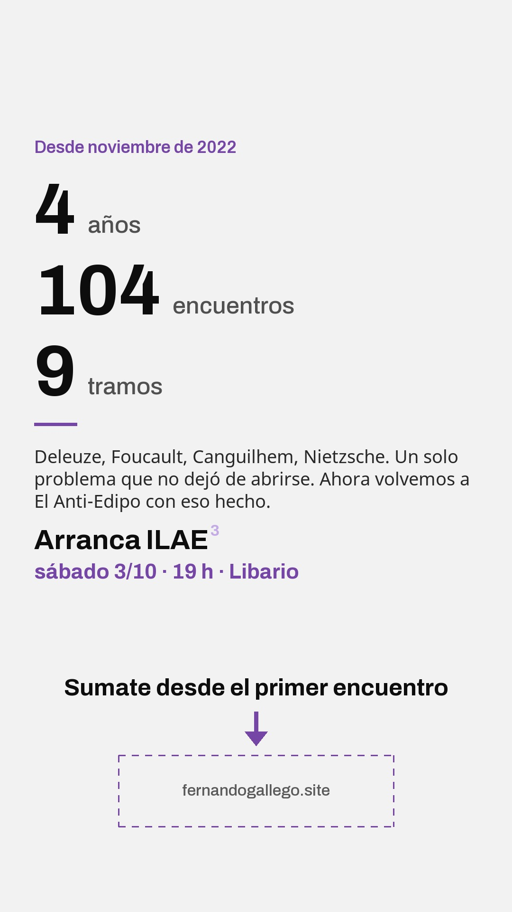
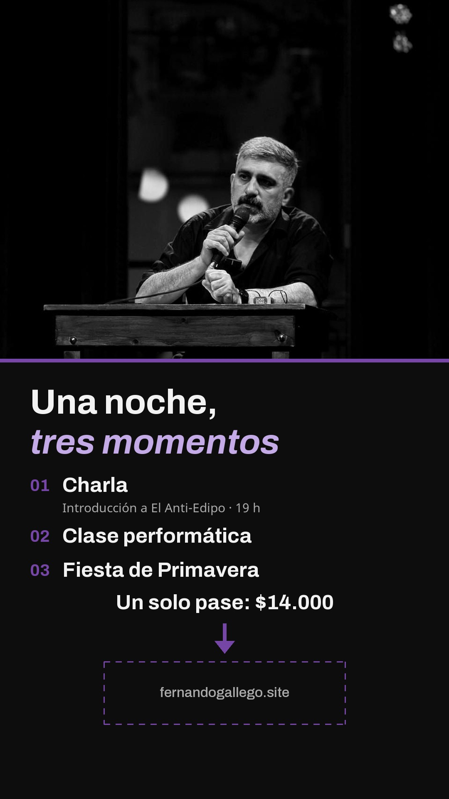

Sábado 3/10 · 19 h · Libario
Kit de difusión
Todo para invitar a la charla de apertura de ILAE3. El link para comprar es siempre el mismo: fernandogallego.site
01 · Historias de Instagram
Descargá y publicá con el sticker de link
- Tocá Descargar en la historia que quieras. Si el celular la abre en vez de bajarla, mantené apretada la imagen y elegí «Guardar imagen».
- En Instagram: nueva historia → elegí la imagen.
- Stickers → Enlace → pegá
https://fernandogallego.site. - Poné el sticker sobre el recuadro punteado, que queda tapado.
{kind=link}

{kind=link}

{kind=link}

{kind=link}

{kind=link}
02 y 03 · Reels y mensajes
Para grabar y para copiar
SON GUIONES · NO SE PUBLICAN TAL CUAL
5 guiones de reels
Qué decir, qué mostrar y qué texto poner en pantalla, con una guía para grabar con el celular y editar. Todos cierran con «Entradas: link en mi perfil».
Ver guiones
LISTOS PARA COPIAR Y ENVIAR
Mensajes de WhatsApp e Instagram
La invitación a comprar la entrada y el pedido al grupo de difusión, con un texto para reenviar.
Ver mensajes